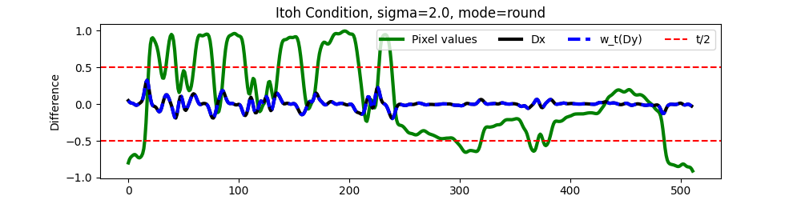

Note
New to DeepInverse? Get started with the basics with the 5 minute quickstart tutorial..
Spatial unwrapping and modulo imaging#
This demo shows the use of the deepinv.physics.SpatialUnwrapping forward model and the deepinv.optim.ItohFidelity for unwrapping problems, which occur in modulo imaging, interferometry SAR and other imaging applications.
It shows how to generate a wrapped phase image, apply blur and noise, and reconstruct the original phase using both DCT inversion and ADMM optimization.
The spatial unwrapping forward model can be mathematically described as follows:
where \(x\) is the original image, \(n\) is additive noise, and \(w_t(\cdot)\) denotes the modulo (wrapping) operation with threshold \(t\). Here, \(\mathrm{q}(\cdot)\) is either the rounding or flooring function, depending on the chosen mode (‘round’ or ‘floor’). The goal is to recover \(x\) from the observed wrapped image \(y\).
Imports and setup#
import torch
import deepinv as dinv
import torchvision.transforms as transforms
import matplotlib.pyplot as plt
from deepinv.optim import ADMM
from deepinv.utils import load_example
Load image and preprocess#
Load example image and preprocess to emulate a high dynamic range image. Images are normalized to [0, 1] and then scaled to the desired dynamic range.
def channel_norm(x):
x = x - x.min(dim=-1, keepdim=True)[0].min(dim=-2, keepdim=True)[0]
x = x / x.max(dim=-1, keepdim=True)[0].max(dim=-2, keepdim=True)[0]
return x
size = 256
dynamic_range = 2 # dynamic range
threshold = 1.0 # threshold for spatial unwrapping
factor = 2 # oversampling factor to ensure Itoh condition
device = "cuda" if torch.cuda.is_available() else "cpu"
img_size = (size, size)
mode = "round" # available modes: "round", "floor"
x_rgb = load_example(
"CBSD_0010.png",
grayscale=False,
device=device,
dtype=torch.float32,
img_size=img_size,
)
x_rgb = channel_norm(x_rgb) * dynamic_range
Itoh condition#
The Itoh condition requires that the difference between adjacent pixels is less than half of the threshold (here, 1.0) to enable perfect unwrapping. Specifically, \(\|Dx\|_{\infty} < t / 2\) where \(D\) denotes the spatial finite difference operator and \(x\) is the original image [1]. When this condition is satisfied, the high dynamic range (HDR) image can be recovered from the wrapped differences of the modulo image by minimizing the Itoh fidelity term:
Below, we illustrate this for a single row of the image by visualizing the pixel values, their differences, and the wrapped differences. We can understand the condition by artificially blurring the images with a Gaussian kernel to reduce their high frequencies (and thus the \(\|Dx\|_{\infty}\)) until the condition is verified. For instace, with a blur of 0.1 it can be seen that the differences \(Dx\) exceed the threshold (red dotted lines), and consequently, we observe a mismatch with the wrapped differences \(w_t(Dy)\), while with a blur of 2.0, the differences \(Dx\) remain within the threshold, matching the wrapped differences \(w_t(Dy)\), indicating that the Itoh condition is satisfied.
modulo_round = lambda x: x - torch.round(x)
modulo_fn = lambda x: x - torch.floor(x) if mode == "floor" else modulo_round(x)
row = 120
row_sel = x_rgb[0, 0, row, :]
def plot_itoh(sigma_blur):
# Select a row and apply Gaussian blur
row_x = row_sel.clone()
# Construct 1D Gaussian filter with given sigma
filter1d = dinv.physics.blur.gaussian_blur(
sigma=(sigma_blur, sigma_blur), angle=0.0
).to(device)
# Reduce to 1D filter and normalize
filter1d = filter1d[..., filter1d.shape[2] // 2, :].squeeze()
filter1d = filter1d / filter1d.sum()
# Upsample by factor and convolve with Gaussian filter
row_x = torch.kron(row_x, torch.ones(1, factor).to(device)).squeeze()
row_x = torch.nn.functional.conv1d(
row_x[None, None, :], filter1d[None, None, :], padding=filter1d.shape[0] // 2
).squeeze()
# Center around zero for "round" mode
if mode == "round":
row_x = row_x - dynamic_range / 2
# Compute differences and wrapped differences
row_dx = row_x[1:] - row_x[:-1]
row_y = modulo_fn(row_x)
row_wdy = modulo_round(row_y[1:] - row_y[:-1])
plt.figure(figsize=(10, 2.5))
plt.plot(row_x.cpu(), label="Pixel values", linewidth=3, color="g")
plt.plot(row_dx.cpu(), label="Dx", linewidth=3, color="k")
plt.plot(row_wdy.cpu(), label="w_t(Dy)", linewidth=3, color="b", linestyle="--")
plt.axhline(threshold / 2, color="r", linestyle="--", label="t/2")
plt.axhline(-threshold / 2, color="r", linestyle="--")
plt.title(f"Itoh Condition, sigma={sigma_blur}, mode={mode}")
plt.xlabel("Pixel Index")
plt.ylabel("Difference")
plt.legend(loc="upper right", bbox_to_anchor=(1.0, 1.0), ncol=4)
plt.show()
plot_itoh(sigma_blur=0.1)
plot_itoh(sigma_blur=2.0)
- 
Apply Resize and Gaussian blur#
To satisfy the Itoh condition, we resize the image and apply a slight Gaussian blur. The blur here is chosen similarly to the 1D analysis above, ensuring adjacent pixel differences are small enough for successful unwrapping.
Add Gaussian noise and modulo operation#
Include Gaussian noise and wrap the image using SpatialUnwrapping physics
Invert with DCT and ADMM (ItohFidelity)#
We provide two inversion methods: a simple DCT-based inversion and an ADMM-based inversion using the Itoh fidelity term and TV prior.
# ADMM-based inversion with TV prior and Itoh fidelity
stepsize = 1e-4
lambda_reg = 2.0 / stepsize
prior = dinv.optim.TVPrior(n_it_max=10)
fidelity = dinv.optim.ItohFidelity(threshold=threshold)
# DCT-based inversion
x_est = fidelity.D_dagger(wrapped_phase)
model = ADMM(
prior=prior,
data_fidelity=fidelity,
max_iter=10,
verbose=False,
stepsize=stepsize,
lambda_reg=lambda_reg,
)
x_model = model(wrapped_phase, physics)
Visualize results#
Here we visualize the wrapped phase, original phase, and the reconstructions from both methods. We also compute PSNR and SSIM metrics for both reconstructions.
psnr_fn = dinv.metric.PSNR()
ssim_fn = dinv.metric.SSIM()
# Normalize for display
x_est = channel_norm(x_est)
x_model = channel_norm(x_model)
phase_map = channel_norm(phase_map)
# Compute metrics
psnr_admm = psnr_fn(phase_map, x_model).item()
psnr_dct = psnr_fn(phase_map, x_est).item()
ssim_admm = ssim_fn(phase_map, x_model).item()
ssim_dct = ssim_fn(phase_map, x_est).item()
# Plot results
imgs = [wrapped_phase[0], phase_map[0], x_est[0], x_model[0]]
titles = [
"Wrapped Phase",
"Original Phase",
f"DCT Inversion\n PSNR={psnr_dct:.2f} SSIM={ssim_dct:.2f}",
f"ADMM Inversion\n PSNR={psnr_admm:.2f} SSIM={ssim_admm:.2f}",
]
dinv.utils.plotting.plot(imgs, titles=titles, cmap="gray", figsize=(20, 10))
- References:
Total running time of the script: (0 minutes 4.893 seconds)